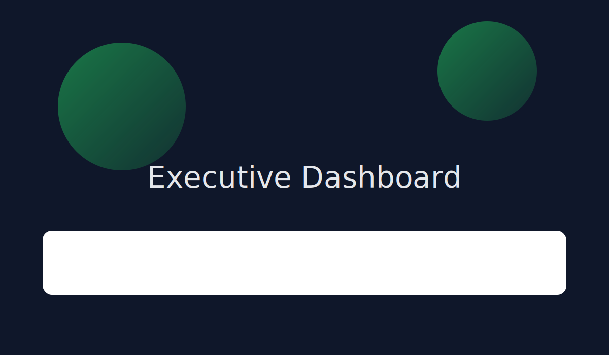

Projects & Case Studies
Filter by skill and open details.

Cohort Retention Analysis
Built SQL models and a Power BI dashboard to reveal retention drivers by acquisition channel.
SQLPower BIdbt

Executive Sales Dashboard
KPI tree, drilldowns, and alerts for weekly revenue review.
TableauPower BIStakeholder Interviews

Experimentation & A/B Testing
Power analysis, CUPED variance reduction, and reporting.
PythonPandasStatsmodels
Churn Risk Scoring (Analyst)
Feature ideation, SQL marts, and a simple logistic model.
SQLLogistic RegressionSegmentation
Operations KPI Suite
SLA monitoring and anomaly alerts.
LookerPower BISQL
Reporting Automation
Automated ingestion, data quality checks, and email digests.
PythonAirflowGreat Expectations